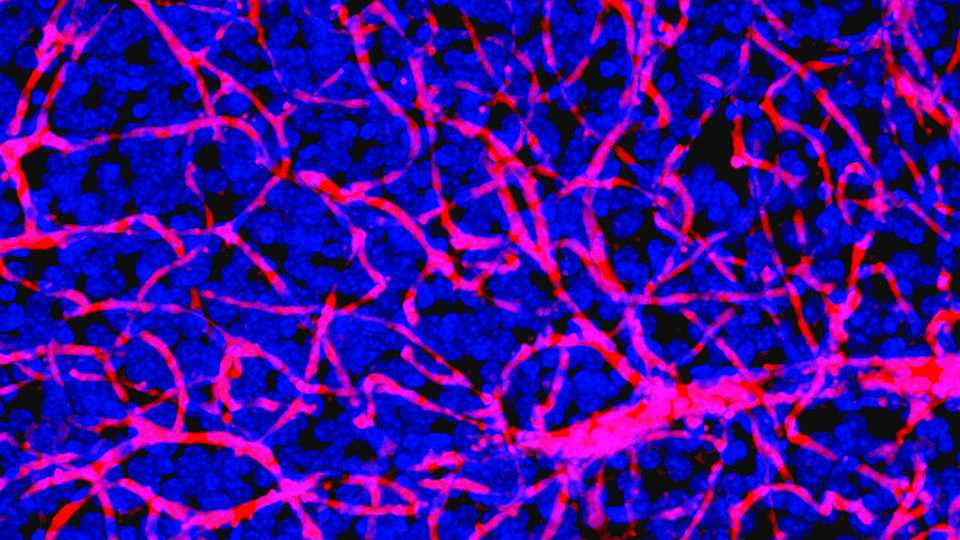

The blood-brain barrier may contribute to cognitive function
Studies in mice suggest it is more sophisticated than once thought

Nov 12th 2026
AS THE COMMAND centre of the human body, the brain requires the best protection biology can supply. The hard, bony casing of the skull helps to shield the organ from threats outside the body. But dangers lie within, too. Blood can contain toxins and pathogens which would wreak havoc in the brain’s delicate environment. Keeping such vandals out is the job of the blood-brain barrier, a tightly packed network of cells coating the interior surfaces of blood vessels leading to the brain.
In a new study, published in Cell on November 11th, a team led by Andrew Yang, a neuroscientist at the Gladstone Institute of Neurological Disease in San Francisco, has shown that the blood-brain barrier is surprisingly sophisticated. By cataloguing the proteins that were allowed through the barrier in mice, the researchers found that it plays a far more active role in brain health than previously thought. The barrier both protects the organ and keeps it supplied with beneficial proteins. The team believe their results may suggest a new approach to treating Alzheimer’s disease.
The blood-brain barrier is more like a bouncer than a brick wall. Its cells keep the harmful stuff out while letting in a select few essential molecules found in blood, such as oxygen and glucose, which fuel neural processes. It also ensures that conditions inside the brain are optimal by expelling any unwanted molecular by-products back into the bloodstream. By controlling what gets in and out, the barrier keeps the brain’s chemical environment stable and its neurons firing properly. But which molecules are on the brain’s guest list, and why, have so far remained unclear.
To answer this question, Dr Yang and his team tagged the proteins in mouse blood with small chemicals that would be invisible to mouse biology. By subsequently extracting brain tissue and identifying any tags within it, the researchers could see which proteins had ended up where.
“What we started seeing is that there was an unexpected breadth and diversity of proteins in the blood that made their way into the brain,” says Dr Yang. Of the 861 tagged proteins, 92 reached the brain’s tissue. Further contrary to their expectations, such physical features as size or electric charge did not affect which proteins made it through. Most had also been produced in organs far from the brain.
The surprises did not stop there. “We thought [the proteins] would cross and then just get dumped into the brain,” says Dr Yang. Instead, his team found that the proteins appeared to target specific cells. One protein, known as apolipoprotein A1 (APOA1), began accumulating in cells called astrocytes which perform a variety of supporting jobs around the brain.
In cells kept alive outside the mice’s bodies, the researchers found that APOA1 helped the astrocytes deliver molecules of cholesterol to the neurons, which use the stuff to build and maintain connections between one another. APOA1, which is produced primarily in the liver, thus appeared to support a crucial neural process.
APOA1 also engaged with a gene whose reduced function has been linked to the risk of Alzheimer’s disease. When the team applied their protein-tagging technique to mice with an early-stage Alzheimer’s-like condition, they found that less APOA1 got through the blood-brain barrier. Conversely, when the researchers engineered the mice’s livers to produce extra APOA1, they saw a corresponding rise in the protein’s levels in the brain. The number of neuronal connections in treated mice increased, and their performance on movement and memory tests improved. “If validated in humans, this work could open an entirely new therapeutic field,” says Egle Solito, an immunobiologist at Queen Mary University of London.
The blood-brain barrier’s connection to Alzheimer’s is not new. It has long been known that a weakened barrier, accompanied by a leak of harmful proteins into the brain, is an early sign of the disease. But Dr Yang’s findings suggest that it is not only the barrier’s erosion that may be harmful but also its failure, while still intact, to supply protective proteins to the brain. He reckons many more surprises await. ■